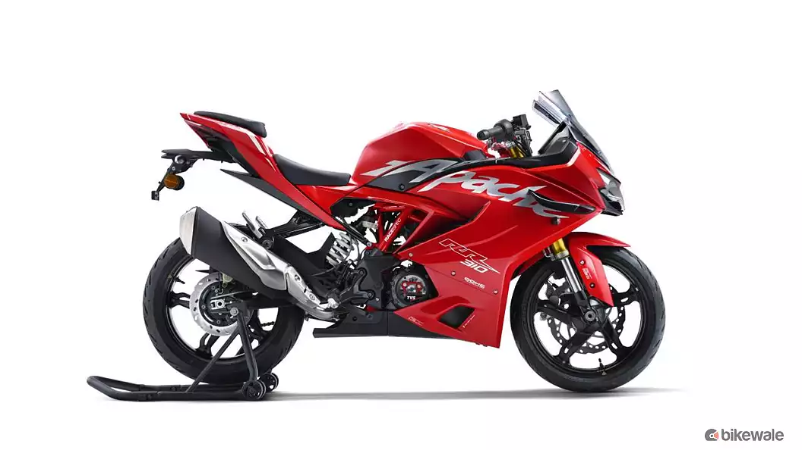

TVS Apache RR 310 Latest Updates
The 2025 TVS Apache RR 310 has been launched in India at Rs 2.77 lakh, ex-showroom.
The bike gets a new set of features for 2025 and is available in three standard and
three Built-to-order trims.

Tvs Apache RR 310 : Key Highlights
Engine Capacity : 312.2 cc
Mileage - ARAI : 34.7 kmpl
Transmission : 6 Speed Manual
Kerb Weight : 174 kg
Lower kerb weight than 64% of sports bikes
Fuel Tank Capacity : 11 litres
Seat Height : 810 mm
Power & Performance
Displacement - 312.2 cc
Max Power - 37.48 bhp @ 9800 rpm
Max Torque - 29 Nm @ 7900 rpm
Top Speed - 160 kmph
Mileage - ARAI - 34.7 kmpl
Mileage - Owner Reported - 33 kmpl
Transmission - 6 Speed Manual
Transmission Type - Chain Drive
Gear Shifting Pattern - 1 Down 5 Up
Clutch - Wet Multiplate with Assist and Slipper Clutch
Riding Range - 382 km
Riding Modes- Track, Urban, Rain and Sport
Braking System
ABS :Switchable ABS
Front Brake Type Disc
Front Brake Size 300 mm
Caliper - Front 4 Piston
Rear Brake Type Disc
Rear Brake Size 240 mm
Caliper - Rear 1 Piston
Wheel Type - Alloy
Front Wheel Size - 17 inch
Rear Wheel Size - 17 inch
Front Tyre Size - 110/70 - ZR17
Rear Tyre Size - 150/60 - ZR17
Suspensions & Chassis
Front Suspension Inverted Cartrideges Telescopic Fork
Rear Suspension Two Arm Aluminium Die-cast Swingarm
Front Suspension Preload Adjuster No
Rear Suspension Preload Adjuster Yes
Chassis Type Trellis Frame, Split Chassis